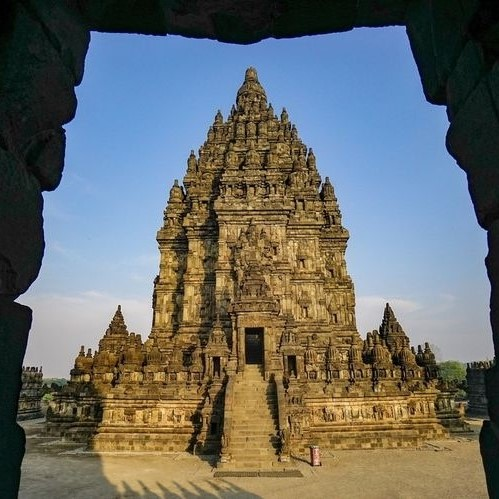

Candhi Prambanan adalah kompleks candi Hindu (Syaiwa) terbesar di Indonesia yang dibangun pada abad ke-9 masehi.

Candi Sukuh didirikan pada abad ke 15 masehi pada masa pemerintahan Ratu Majapahit bernama Suhita yang saat itu menjabat pada tahun 1429-1446.